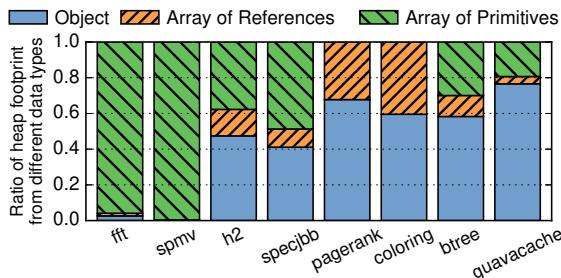
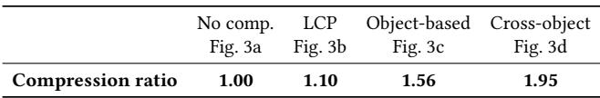
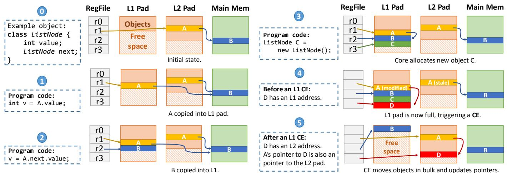
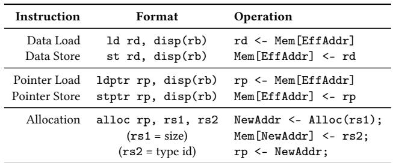
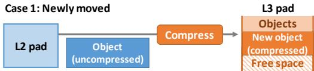
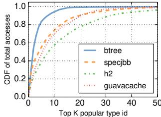
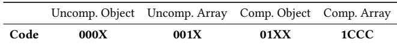
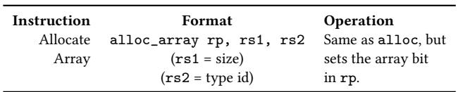
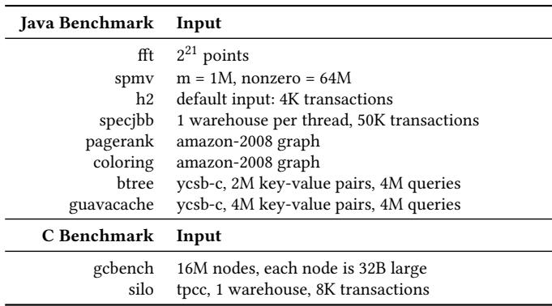
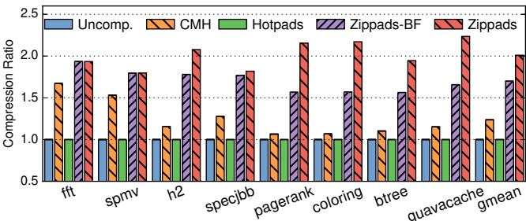

Compress Objects, Not Cache Lines: An Object-Based Compressed Memory Hierarchy 图表详解¶
Figure 1. Fraction of the heap consumed by objects and arrays for several Java benchmarks.¶

- 图片展示了八个 Java 基准测试程序（fft, spmv, h2, specjbb, pagerank, coloring, btree, guavacache）中堆内存足迹（heap footprint）按数据类型划分的占比，旨在说明对象（Object）和数组（Array）在不同应用中的内存分布差异。
- 核心观察：多数现代 Java 应用（除 fft 和 spmv 外）的堆内存主要由对象构成，而非传统科学计算中常见的数组。
- 数据以堆叠柱状图形式呈现，每个柱子代表一个基准测试，内部按三种数据类型细分：
- Object（蓝色实块）：普通对象实例。
- Array of References（橙色斜线块）：引用类型的数组（如 Object[]）。
- Array of Primitives（绿色横线块）：基本类型数组（如 int[], double[]）。
| Benchmark | Object (%) | Array of References (%) | Array of Primitives (%) |
|---|---|---|---|
| fft | ~0% | ~0% | ~100% |
| spmv | ~0% | ~0% | ~100% |
| h2 | ~40% | ~20% | ~40% |
| specjbb | ~50% | ~30% | ~20% |
| pagerank | ~60% | ~20% | ~20% |
| coloring | ~60% | ~20% | ~20% |
| btree | ~70% | ~10% | ~20% |
| guavacache | ~80% | ~5% | ~15% |
- 关键结论：
- fft 和 spmv 是典型的数组密集型科学计算程序，几乎全部堆内存用于存储基本类型数组。
- h2、specjbb、pagerank、coloring 属于混合型应用，对象占比在 50%-60%，但仍显著高于数组。
- btree 和 guavacache 是高度对象导向的应用，对象占据堆内存的 70% 以上，其中 guavacache 达到约 80%，是对象主导最明显的例子。
- 此图支撑论文核心论点：现有基于 cache line 的压缩技术对对象密集型应用效果不佳，因为它们无法有效利用对象间冗余，且对象布局不规则，难以匹配固定大小的压缩单元。因此，提出 Zippads 和 COCO 等面向对象的压缩方案是必要的。
Figure 2. Objects and their memory layout in BTree.¶

- 图片展示了 BTree 应用中三个核心对象类型（Node、Entry[]、Entry）在内存中的布局，这些布局基于 Maxine JVM 的实现。
- Node 对象：
- 总大小为 32 字节。
- 包含一个 Class id (Node) 标识符和一个 header 字段。
- 包含一个整型字段 int nChild，用于记录子节点数量。
- 包含一个引用字段 ref children，指向一个 Entry 数组对象。
- Entry[] 对象：
- 总大小为 56 字节（以 4 个元素为例）。
- 包含一个 Class id (Entry[]) 标识符和一个 header 字段。
- 包含一个表示数组长度的字段 4 (Array length)。
- 包含四个引用字段：ref Entry[0] 到 ref Entry[3]，分别指向具体的 Entry 对象。
- Entry 对象：
- 总大小为 40 字节。
- 包含一个 Class id (Entry) 标识符和一个 header 字段。
- 包含三个引用字段：ref key、ref value 和 ref next，分别指向键、值和下一个 Entry 对象。
- 红色箭头表示对象间的引用关系，例如 Node 引用 Entry[]，Entry[] 引用多个 Entry，Entry 又可能引用其他对象或自身形成链表。
- 下表总结了各对象的内存布局：
| 对象类型 | 大小 (字节) | 主要字段 |
|---|---|---|
| Node | 32 | Class id, header, int nChild, ref children |
| Entry[] | 56 | Class id, header, Array length (4), ref Entry[0]~[3] |
| Entry | 40 | Class id, header, ref key, ref value, ref next |
- 这种布局体现了 Java 对象在内存中的典型结构，包括类标识、头部信息和实际数据字段，并通过引用连接形成复杂的数据结构。
Figure 3. Different compression techniques applied to BTree.¶

- 图片展示了四种不同压缩技术在 BTree 应用中的内存布局对比，旨在说明传统基于缓存行的压缩（如 LCP）与新型对象级压缩（Zippads + COCO）之间的效率差异。
- (a) No compression：未压缩状态。每个对象（Node、Entry[]、Entry[0] 至 Entry[3]）按原始大小连续存储于 4K 页面中，地址从 0x00 开始递增，无空间浪费。
- (b) LCP：采用 Linearly Compressed Pages 压缩方案。每个 64B 缓存行被压缩为固定 32B 块，但因算法限制和性能导向设计，导致大量未使用空间（hatched 区域），最终页面需向上取整至 2K，造成显著空间浪费。
- (c) Object-based compression：Zippads 的核心思想——以对象为单位压缩。对象被压缩后紧凑排列，无内部碎片；指针直接指向压缩后的对象地址，无需额外地址翻译层，实现紧凑布局与直接寻址。
- (d) Cross-object compression：引入 COCO 算法，在对象级压缩基础上进一步利用跨对象冗余。例如，仅存储一个基础对象 Entry[0]'，其余 Entry 对象只存储与之不同的字节（ΔEntry），从而获得更高压缩比。
| 压缩方案 | 压缩单位 | 是否有内部碎片 | 是否需要地址翻译 | 是否利用跨对象冗余 |
|---|---|---|---|---|
| No compression | 无 | 否 | 否 | 否 |
| LCP | Cache line | 是 | 是 | 否 |
| Object-based (Zippads) | Object | 否 | 否 | 否 |
| Cross-object (COCO) | Object + Delta | 否 | 否 | 是 |
- 关键视觉强调：
- 红色方框标注“Significant unused space due to performance-oriented layout”，突出 LCP 因追求低延迟而牺牲空间效率的问题。
- 蓝色方框标注“Compact layout; pointers to compressed objects directly”，强调 Zippads 在布局紧凑性和指针直接寻址上的优势。
- 红色箭头在 (c) 和 (d) 中表示指针重写机制，体现 Hotpads 架构下指针可被硬件动态更新以指向压缩对象的新位置。
- 此图直观验证了论文核心论点：对象是对象型程序的自然压缩单元，且跨对象冗余是提升压缩率的关键。
bcbc562f8ea691e62747a38ce7860a07b1679a1eb31128210c344d2c0badb3a3.jpg¶

- 该图片为一张数据表格，标题为“Table 1. Compression ratios of different schemes on BTree.”，用于展示在 BTree 微基准测试中四种不同压缩方案的压缩比。
- 表格包含两行五列。第一行为方案名称及对应图示引用，第二行为对应的压缩比数值。
- 方案一为“No comp.”（无压缩），作为基准，其压缩比为 1.00，对应图 3a 的内存布局。
- 方案二为“LCP”，即 Linearly Compressed Pages 压缩方案，压缩比为 1.10，对应图 3b。该方案因固定块大小和内部碎片导致效率低下。
- 方案三为“Object-based”，即基于对象的压缩方案，压缩比提升至 1.56，对应图 3c。此方案通过直接压缩整个对象并消除地址翻译层，实现了更紧凑的存储。
- 方案四为“Cross-object”，即跨对象压缩方案（COCO），压缩比进一步提升至 1.95，对应图 3d。该方案利用同类型对象间的冗余，仅存储与基对象的差异部分，从而获得最高压缩效率。
- 数据表明，从传统 LCP 到对象级再到跨对象压缩，压缩比呈阶梯式增长，验证了论文提出的两个核心洞察：对象是更自然的压缩单元，且跨对象存在大量冗余可被利用。
| 方案名称 | 对应图示 | 压缩比 |
|---|---|---|
| No comp. | Fig. 3a | 1.00 |
| LCP | Fig. 3b | 1.10 |
| Object-based | Fig. 3c | 1.56 |
| Cross-object | Fig. 3d | 1.95 |
Figure 5. Hotpads is a hierarchical memory system with multiple levels of pads.¶

- 图片展示了 Hotpads 的层级内存系统架构，包含多个 Pad 层级，从核心到主存呈线性递进结构。
- 系统由四个主要组件构成：Core、L1 Pad、L2 Pad、L3 Pad 和 Main Memory，各组件之间通过双向箭头连接，表示数据可双向流动。
- Core 位于最左侧，代表处理器核心，直接与 L1 Pad 交互，是整个内存访问路径的起点。
- L1 Pad、L2 Pad、L3 Pad 依次向右排列，颜色均为浅蓝色，表明它们属于同一类硬件单元——Pad，用于存储变量大小的对象，支持高效对象迁移和管理。
- Main Memory 位于最右侧，以绿色方框表示，作为最终的后备存储，与 L3 Pad 相连，承担冷数据的持久化存储功能。
- 各 Pad 层级之间通过单向或双向箭头连接，体现对象在层级间按热度迁移的机制：热对象驻留于靠近核心的 Pad，冷对象逐级移至更深层级或主存。
- 此架构设计的核心优势在于：对象粒度的数据移动、硬件管理的垃圾回收、以及避免传统缓存的关联查找开销，从而提升内存效率。
- 图中未显示具体容量或延迟参数，但根据上下文，Pad 的大小通常较小，适合快速硬件操作，而 Main Memory 则提供大容量存储。
| 组件 | 类型 | 功能描述 | 连接方向 |
|---|---|---|---|
| Core | 处理器核心 | 发起内存访问，与 L1 Pad 直接交互 | 双向 |
| L1 Pad | Scratchpad | 存储热对象，支持快速分配与访问 | 与 Core、L2 |
| L2 Pad | Scratchpad | 中间层，存储较冷对象，支持对象迁移 | 与 L1、L3 |
| L3 Pad | Scratchpad | 最后一层 Pad，存储冷对象，接近主存 | 与 L2、Main |
| Main Memory | 主存 | 持久化存储所有对象，作为最终后备 | 与 L3 |
- 整体结构体现了 Hotpads 的设计理念：隐藏内存布局、对象为中心、硬件自动管理，适用于现代面向对象语言的内存需求。
Figure 6. Pad organization.¶

- 图片展示了 Hotpads 系统中一个 pad 的内部组织结构，是理解 Zippads 压缩机制的基础。
- 整体结构分为三个主要区域：Data Array、Metadata 和 Canonical Tags，它们在物理上是分离的。
- Data Array 是 pad 的核心存储区，采用 循环缓冲区（circular buffer） 设计，包含两个逻辑部分：
- Objects：已分配的对象数据块，按顺序存放，形成一个连续的已用区域。
- Free space：未使用的空闲空间，位于已分配对象之后，用于新对象的分配。
- Metadata 区域与 Data Array 并行存在，其作用是记录每个存储在 Data Array 中的对象的元信息。图中标注为 “(word/object)”，暗示其粒度可以是字或对象级别，用于支持对象的定位和管理。
- Canonical Tags 是一个独立的标签存储区，用于实现 解耦式标签查找（decoupled tag store）。它存储的是对象的“规范地址”（canonical address），即对象在其“规范层级”（canonical level）上的地址，用于在对象被复制到不同层级时进行地址翻译。
- 这种设计的关键优势在于：
- Bump pointer allocation：新对象或从下层迁移上来的对象直接追加到已分配区域末尾，分配效率极高。
- 避免关联查找：通过指针重写（pointer rewriting）和 Canonical Tags，系统能快速定位对象副本，大幅减少传统缓存所需的昂贵关联查找操作。
- 支持压缩：Zippads 利用这种结构，在对象被移动到压缩层级（如 L3 pad 或主存）时，直接在 Data Array 的空闲空间中存储其压缩后的版本，并更新所有指向它的指针，从而避免了额外的地址转换开销。
Figure 4. Example showing Hotpads’s main features.¶

-
图片展示了 Hotpads 内存层次结构的核心机制，通过一个单核系统中 ListNode 对象的生命周期示例进行说明。整个流程分为五个阶段，从初始状态到经历对象访问、分配、以及最终的 Collection-Eviction（CE）过程。
-
初始状态 (0)：
- 系统包含寄存器文件（RegFile）、L1 Pad、L2 Pad 和主存（Main Mem）。
- 寄存器 r1 指向位于 L2 Pad 的对象 A；A 的 next 字段指向位于主存的对象 B。
- 对象 A 的canonical level为 L2，意味着其“权威”副本存储在 L2，主存中无对应副本。
- 对象 B 的 canonical level 为主存。
- L1 和 L2 Pad 中还存在其他无关对象（橙色块），用于展示 Pad 的空间布局。
-
对象访问 (1)：
- 程序执行
int v = A.value;，触发对对象 A 的访问。 - Hotpads 将对象 A 从 L2 Pad 复制到 L1 Pad 的空闲区域末尾。
- 同时，指针重写机制将寄存器 r1 中的指针更新为指向 L1 Pad 中的新副本。
- 此后，对该对象的任何访问都将直接命中 L1，无需再访问 L2。
- 程序执行
-
指针解引用 (2)：
- 程序执行
v = A.next.value;，即解引用 A 的 next 指针以访问对象 B。 - Hotpads 将对象 B 从主存复制到 L1 Pad 的空闲区域。
- 同样，A 内部指向 B 的指针被重写，指向 L1 Pad 中 B 的新副本。
- 这体现了 Hotpads 的对象粒度数据移动特性。
- 程序执行
-
对象分配 (3)：
- 程序执行
ListNode C = new ListNode();，创建一个新对象 C。 - Hotpads 直接在 L1 Pad 的空闲空间中分配对象 C，无需为其在主存中预留空间。
- 新对象 C 的 canonical level 即为 L1，它是一个完全驻留在缓存层次中的对象。
- 程序执行
-
Collection-Eviction (4 & 5)：
- 当 L1 Pad 空间耗尽时，触发 CE 过程。
- 阶段 4 (CE 前)：图中显示 L1 Pad 已满，包含对象 A（已修改）、B、C 和 D。其中 C 是死对象（未被引用），D 是活对象（被 A 引用）。A 的 L1 副本是脏的，L2 副本已过时。
- 阶段 5 (CE 后)：
- 垃圾回收：死对象 C 被回收，释放空间。
- 对象迁移：活对象 A 和 D 被迁移到 L2 Pad。由于 A 原本来自 L2，其修改后的副本被写回 L2 的原位置。D 则获得一个新的 L2 地址作为其新的 canonical level。
- 对象保留与移动：对象 B 因最近被访问而保留在 L1，并被移动到数组起始位置。
- 指针更新：所有指向被移动对象的指针（如寄存器 r3 和对象 A 内部的指针）都被更新，指向它们在新位置的地址。
- 内存整理：CE 过程会将所有存活对象紧凑地排列在一起，消除碎片，简化空闲空间管理。
-
该图清晰地阐释了 Hotpads 的三大核心优势：
- 对象粒度操作：数据移动和管理以对象为单位，而非固定大小的 cache line。
- 指针重写：通过硬件自动更新指针，确保程序始终访问最新副本，避免了复杂的地址翻译表。
- 硬件加速的 GC/CE：利用硬件在 Pad 层级实现快速的垃圾回收和对象迁移，显著减少主存流量。
-
下表总结了各阶段的关键事件：
| 阶段 | 关键事件 | 对象状态变化 |
|---|---|---|
| 0 | 初始状态 | A 在 L2, B 在 Main Mem |
| 1 | 访问 A | A 被复制到 L1, r1 指向 L1 副本 |
| 2 | 解引用 A.next | B 被复制到 L1, A 的 next 指针指向 L1 副本 |
| 3 | 分配 C | C 在 L1 分配，无主存副本 |
| 4 | L1 满，触发 CE | A (dirty), B, C (dead), D (live) |
| 5 | CE 完成 | C 被回收；A 写回 L2；D 移至 L2；B 保留在 L1 并移动；所有相关指针更新 |
- 此机制为 Zippads 提供了基础，使其能够在对象被迁移到压缩层级时，直接将其压缩并更新指针，从而避免了传统压缩架构所需的额外地址转换开销。
35ce53048314e9be49301bd8ce4b7e701647266fee21e9f7df35fc58587d8c42.jpg¶

- 该图片展示的是 Hotpads ISA 的一部分，具体为支持对象访问和指针操作的指令集。
- 指令分为三类：数据加载/存储、指针加载/存储 和 对象分配。
- 所有指令均采用 base+offset 寻址模式，其中
rb为基址寄存器，必须持有对象指针；disp为偏移量，可为立即数或寄存器。 - 数据指令（
ld,st）用于非指针数据，指针指令（ldptr,stptr）用于访问对象内的指针字段，确保硬件能控制指针内容。 - 分配指令
alloc接收两个参数：rs1指定对象大小，rs2指定类型 ID；返回新对象地址至目标寄存器rp。 - 此设计使 Hotpads 能透明管理对象生命周期与指针重写，为 Zippads 的压缩机制提供底层支持。
| Instruction | Format | Operation |
|---|---|---|
| Data Load | ld rd, disp(rb) |
rd <- Mem[EffAddr] |
| Data Store | st rd, disp(rb) |
Mem[EffAddr] <- rd |
| Pointer Load | ldptr rp, disp(rb) |
rp <- Mem[EffAddr] |
| Pointer Store | stptr rp, disp(rb) |
Mem[EffAddr] <- rp |
| Allocation | alloc rp, rs1, rs2 |
NewAddr <- Alloc(rs1); Mem[NewAddr] <- rs2; rp <- NewAddr; |
(rs1 = size) |
||
(rs2 = type id) |
- 关键术语如 ISA, base+offset, EffAddr, Alloc 均保留英文原名。
- 该表是理解 Hotpads 如何实现对象级内存管理的基础，也是 Zippads 实现无地址翻译压缩的前提。
Figure 7. Hotpads pointer format.¶

- 图片展示了 Hotpads 系统中指针的格式，该格式是微架构层面的设计，对软件层透明。
- 指针总长度为 64 位，分为两个主要字段：Size 和 Address。
- Size 字段占据高 14 位（位 63 至 50），用于存储对象的大小（以字为单位）。此设计简化了对象读取操作：硬件只需从起始地址读取指定数量的字即可完整获取对象内容。
- Address 字段占据低 48 位（位 47 至 0），用于存储对象在内存中的起始地址。该地址始终指向对象的第一个字（word-aligned）。
- 该指针格式允许硬件直接控制和操作指针内容，这是 Zippads 能够在压缩时重写指针、直接指向压缩对象的关键前提。
- 下表总结了该指针格式的位域分配：
| 字段名称 | 位范围 | 位数 | 功能描述 |
|---|---|---|---|
| Size | 63-50 | 14 | 存储对象大小（单位：字） |
| Address | 47-0 | 48 | 存储对象起始地址 |
- 此格式为后续 Zippads 的扩展奠定了基础，例如在指针中嵌入压缩元数据（如压缩算法类型、压缩后大小等），而无需修改指令集架构（ISA）。
Figure 8. Example Zippads hierarchy with a compressed last-level pad and main memory.¶

- 图片展示了 Zippads 内存层次结构的一个实例，其核心设计是将压缩操作集中在 最后一级 Pad（L3 Pad） 和 主存（Main Memory），而 L1 Pad 和 L2 Pad 保持未压缩状态。
- 整个系统分为两个主要区域：左侧为 Uncompressed 区域，包含 Core、L1 Pad 和 L2 Pad；右侧为 Compressed 区域，包含 L3 Pad 和 Main Memory。
- 在 Uncompressed 区域内，数据在 Core、L1 Pad 和 L2 Pad 之间直接传输，无需压缩或解压操作，保证了低延迟访问。
- 当数据从 L2 Pad 向 L3 Pad 移动时，会经过一个 Compress 模块进行压缩处理，确保进入压缩区域的数据是压缩格式。
- 反之，当数据从 L3 Pad 返回到 L2 Pad 时，会经过一个 Decompress 模块进行解压，以恢复原始数据格式供上层使用。
- L3 Pad 与 Main Memory 之间的数据传输也保持压缩状态，进一步减少带宽需求和存储占用。
- 这种分层设计使得 Zippads 能够在保持高性能的同时，有效利用压缩技术提升内存效率，尤其适用于对象密集型应用。
Figure 9. Compressing newly moved objects.¶

- 图片展示了 Zippads 系统中 Case 1: Newly moved objects 的压缩流程，即对象首次从非压缩层级（如 L2 pad）迁移到压缩层级（如 L3 pad）时的处理方式。
- 流程起始于 L2 pad 中的一个 uncompressed object，该对象在被访问后触发迁移机制，进入压缩路径。
- 经过 Compress 模块处理后，对象被压缩并写入 L3 pad 的数据区域，此时对象状态变为 compressed。
- 在 L3 pad 中，新压缩对象被放置于 Free space 起始位置，采用 bump-pointer allocation 策略，确保对象之间无空隙，最大化空间利用率。
- 压缩完成后，该对象的 canonical address 更新为 L3 pad 中的新地址，所有指向该对象的指针（包括寄存器和 pad 内部指针）均被重写，以直接引用压缩后的对象，避免额外地址翻译开销。
- 此过程体现了 Zippads 的核心设计原则：压缩对象而非 cache line，并利用 Hotpads 的对象迁移机制实现透明压缩。
| 阶段 | 源位置 | 目标位置 | 对象状态 | 关键操作 |
|---|---|---|---|---|
| 迁移前 | L2 pad | — | uncompressed | 触发迁移条件（如未被频繁访问） |
| 压缩中 | — | Compress模块 | intermediate | 执行压缩算法（如 COCO 或 BDI+FPC） |
| 迁移后 | — | L3 pad (Free space) | compressed | bump-pointer 分配 + 指针重写 |
- 该图强调了 Zippads 如何通过对象粒度压缩与硬件指针重写，消除传统压缩内存系统所需的 address translation layer，从而降低延迟与元数据开销。
Figure 10. Compressing objects on dirty writebacks.¶

- 图片展示了 Zippads 在处理 dirty writeback 时的压缩对象存储策略，分为两种情况：新压缩大小小于等于旧大小，以及新压缩大小大于旧大小。
- Case 2: Dirty writeback 流程起点为一个未压缩的更新对象（Updated object (uncompressed)），经过压缩后生成一个压缩对象（Compress → Updated object (compressed)）。
- 当新压缩对象大小 ≤ 旧压缩对象大小时：
- 新对象直接覆盖原位置。
- 若新大小更小，则留下 Unused space（未使用空间），该空间被保留，不回收。
- 当新压缩对象大小 > 旧压缩对象大小时：
- 原位置无法容纳新对象，触发 overflow。
- 系统在可用空间中分配新位置存放压缩对象。
- 原位置被转换为 Forwarding thunk，其中存储指向新位置的指针。
- 后续访问原地址时，会通过 forwarding thunk 重定向到新位置。
- 该机制确保了指针一致性，避免因对象移动导致访问失效。
- 虽然 overflow 和 unused space 会造成临时存储效率下降，但 Zippads 通过 periodic compaction（周期性整理）在 Collection-Eviction（CE）过程中消除这些碎片。
- 下表总结了两种情况下的存储行为：
| 条件 | 存储位置 | 是否产生碎片 | 解决方案 |
|---|---|---|---|
| new size ≤ old size | 原位置 | 是（若更小则留 unused space） | CE 期间 compact 消除 |
| new size > old size | 新分配位置 | 是（原位置变 forwarding thunk） | CE 期间 compact 消除 |
- 此设计权衡了写回延迟与存储效率，依赖硬件自动管理指针重写和碎片回收，无需软件干预。
Figure 11. Zippads pointer format. Compression information is encoded in the pointer.¶

-
图片展示了 Zippads 系统中指针的格式设计，其核心思想是将压缩元数据直接编码在指针内部，而非依赖缓存标签或额外的地址翻译表。
-
该指针为 64 位宽，结构从高位到低位划分为三个主要字段：
- Compressed size (压缩大小)：占据高 15 位（位 63 至 49），用于存储对象被压缩后的实际大小（以字为单位）。此信息对硬件至关重要，因为它决定了在访问时需要从内存中读取多少数据。
- Compression encoding bits (压缩编码位)：占据中间 X 位（位 48 至 49-X），用于指示当前对象所使用的具体压缩算法及其相关参数。例如，当使用 BDI 算法时，这几位可能用于选择不同的编码模式。
- Address (地址)：占据剩余的低 (48-X) 位，用于存储对象在内存中的起始地址。由于压缩信息和大小信息占据了部分位宽，因此可用的地址空间略有缩减。
-
这种设计的关键优势在于其高效性与透明性：
- 避免地址转换开销：所有内存访问都始于一个指针。通过将压缩信息内嵌于指针，硬件在获取指针后即可立即知道如何解压数据，无需进行额外的地址查找或翻译步骤，从而避免了传统压缩内存架构中常见的“第二级翻译”开销。
- 支持异构压缩：不同的对象可以使用不同的压缩算法（如 COCO 或 BDI+FPC），指针中的编码位允许系统动态识别并应用正确的解压逻辑。
- 保持 ISA 透明：虽然指针格式发生了变化，但这种变化是微架构层面的，对上层软件和指令集架构（ISA）是透明的，应用程序无需修改即可运行。
-
下表总结了 Zippads 指针格式的字段分配：
| 字段名称 | 位宽 | 位置 (bit) | 功能描述 |
|---|---|---|---|
| Compressed size | 15 bits | 63-49 | 存储压缩后对象的大小（以字为单位），指导硬件读取正确数量的数据。 |
| Compression encoding bits | X bits | 48-(49-X) | 存储算法标识和参数，用于选择正确的解压算法。 |
| Address | (48-X) bits | (49-X)-0 | 存储对象在内存中的起始地址，地址空间因压缩元数据而略有缩减。 |
- 该设计是 Zippads 能够实现高效、紧凑的对象压缩存储的基础，它巧妙地利用了对象导向程序中“通过指针访问”的固有特性，将压缩管理的复杂性封装在指针本身，从而实现了高性能和高压缩率的统一。
Figure 12. Zippads breaks large objects into subobjects.¶

-
图片展示了 Zippads 如何处理大型对象（>128B）的压缩与访问机制，核心策略是将其拆分为多个 64B subobjects，以避免全对象解压带来的高延迟。
-
该图通过三阶段流程图说明了从对象分配到子对象按需加载的过程：
- 阶段①：分配索引数组
- 程序调用
alloc rp, 256, intA分配一个 256B 对象。 - Zippads 不立即分配完整空间，而是创建一个包含 4 个元素的 Index array（每个指向一个 64B subobject）。
- 所有指针初始为 Null，表示对应 subobject 尚未分配。
- 程序调用
- 阶段②：首次访问触发分配
- 程序执行
ld rd, 72(rp)，访问偏移 72 字节处的数据。 - 72 字节属于第二个 subobject（64–127 字节范围），因此 Zippads 动态分配该 subobject。
- 更新 Index array 中对应条目，使其指向新分配的 subobject。
- 程序执行
- 阶段③ & ④：后续访问与写回
- 程序执行
addi rd, 1和st rd, 72(rp)，修改并写回数据。 - Zippads 通过 Index array 定位目标 subobject，完成读写操作。
- 每次访问仅涉及单个 subobject，无需解压整个大对象。
- 程序执行
- 阶段①：分配索引数组
-
关键设计要点：
- allocate-on-access：subobject 在首次被访问时才分配，减少内存浪费。
- Index array 透明化：对软件不可见，由硬件自动管理。
- 压缩粒度细化：每个 subobject 可独立压缩，提升灵活性和效率。
- 指针更新机制：Index array 中的指针随 subobject 分配/移动而更新，确保正确寻址。
-
性能与开销权衡：
优势 开销 避免大对象全量解压，降低访问延迟 增加少量元数据（Index array）占用空间 提升压缩率，因小块更易压缩 需额外一次指针查找（通过 Index array） 支持稀疏访问模式，节省带宽 对连续访问场景可能引入轻微间接寻址开销 -
该机制特别适用于 Java、C/C++ 等语言中常见的大型数组或结构体，尤其在访问局部性较强的应用中表现优异。
Figure 13. Example COCO-compressed object.¶

- 图片展示了 COCO (Cross-Object COmpression) 算法的一个压缩实例，对比了原始对象、基对象与压缩后对象的内存布局。
- 原始对象大小为 32B，包含四个字段：
4527（无差异）、0（无差异）、0xaabb（2字节差异）、0x0000ffffaabbbaabb（4字节差异）。 - 基对象同样为 32B，其内容与原始对象前两个字段一致，后两个字段不同，用于差分压缩。
- 压缩对象仅占用 16B，由三部分组成：
- Base id (4B)：标识所引用的基对象，此处为
4527。 - Bitmap (4B)：按字节标记差异位，共32位（对应32字节），其中第18–19位和第24–27位为1，表示对应位置存在差异。
- Delta bytes (8B)：仅存储实际差异数据，即
0xccdd和0xccddccdd，其余空间标记为 Unused。
- Base id (4B)：标识所引用的基对象，此处为
- 压缩过程通过比较原始对象与基对象，仅保留差异部分，从而实现空间节省。
- 压缩比计算如下：
| 对象类型 | 大小 (B) | 说明 |
|---|---|---|
| 原始对象 | 32 | 未压缩 |
| 基对象 | 32 | 作为参照 |
| 压缩对象 | 16 | 包含ID、Bitmap、Delta |
| 压缩率 | 2× | 32B → 16B |
- 该图直观体现了 COCO 的核心思想：利用对象间相似性，通过差分编码减少冗余存储。
Figure 14. CDF of accesses to most popular object ids.¶

- 图片展示了四个 Java 应用程序（btree、specjbb、h2、guavacache）对最流行对象类型 ID 的访问累积分布函数（CDF），横轴为“Top K popular type id”，纵轴为“CDF of total accesses”。
- 核心观察：所有应用的访问都高度集中在少数对象类型上，即对象类型访问具有显著的长尾效应和高度倾斜性。
- 从图中曲线可见：
- btree（蓝色实线）：访问集中度最高，前 5 个类型 ID 占据了约 80% 的总访问量；前 10 个类型 ID 覆盖超过 90%。
- specjbb（橙色虚线）：次高集中度，前 10 个类型 ID 约占 75%，前 20 个覆盖约 90%。
- h2（绿色点线）：集中度中等，前 10 个类型 ID 约占 65%，前 30 个覆盖约 90%。
- guavacache（红色点划线）：集中度最低，但前 20 个类型 ID 仍覆盖约 80%，前 40 个接近 95%。
- 此数据支撑了论文第 5.4 节关于 COCO 压缩算法设计的关键假设：由于访问高度集中于少量对象类型，一个小型的 base object cache（如 8KB）即可高效缓存最频繁访问的 base objects，从而避免每次解压时都去主存取 base object，大幅降低延迟和带宽开销。
- 下表总结各应用在不同 Top-K 类型 ID 下的访问覆盖率：
| 应用名 | Top 5 访问覆盖率 | Top 10 访问覆盖率 | Top 20 访问覆盖率 |
|---|---|---|---|
| btree | ~80% | >90% | >95% |
| specjbb | ~65% | ~75% | ~90% |
| h2 | ~55% | ~65% | ~85% |
| guavacache | ~45% | ~65% | ~80% |
- 该图是论证 COCO 算法实用性和低开销的重要依据，表明其依赖的“base object 缓存”机制在真实工作负载下是可行且高效的。
Table 3. Zippads+COCO in-pointer compression information. X denotes the bit does not matter, and Cs denote the bits used by hybrid BDI+FPC encoding.¶

- 图片内容为 Table 3，标题为 “Zippads+COCO in-pointer compression information”，用于说明 Zippads 系统中指针内嵌的压缩元数据编码格式。
- 表格包含四列，分别对应四种数据类型：Uncomp. Object（未压缩对象）、Uncomp. Array（未压缩数组）、Comp. Object（压缩对象）、Comp. Array（压缩数组）。
- 每列下方标注了对应的 4位二进制编码，用于在指针中标识数据类型及压缩算法：
- Uncomp. Object:
000X—— 前三位为 000，第四位 X 表示“无关位”，用于标识未压缩对象。 - Uncomp. Array:
001X—— 前三位为 001，第四位 X 无关，用于标识未压缩数组。 - Comp. Object:
01XX—— 前两位为 01，后两位 XX 无关，用于标识使用 COCO 压缩的对象。 - Comp. Array:
1CCC—— 第一位为 1，后三位 CCC 用于表示 hybrid BDI+FPC 压缩算法的具体编码选择。
- Uncomp. Object:
| 数据类型 | 编码格式 |
|---|---|
| Uncomp. Object | 000X |
| Uncomp. Array | 001X |
| Comp. Object | 01XX |
| Comp. Array | 1CCC |
- X 表示该位在当前上下文中“不重要”或“可忽略”，不影响类型判断。
- C 表示该位用于 BDI+FPC 压缩算法的选择，具体含义由压缩器解释。
- 此编码机制使 Zippads 能在访问时快速识别数据类型和压缩方案，无需额外查表，提升效率。
- 该设计支持 混合压缩策略：对象用 COCO，数组用 BDI+FPC，兼顾不同数据结构的压缩特性。
- 指针内嵌元数据是 Zippads 的核心优化之一，避免了传统压缩系统所需的地址翻译开销。
69e038bd5e3a77df4a6870a2333324b17d3853b29e842bef69f2adaca79c719d.jpg¶

- 该图片展示的是 Zippads+COCO 系统中用于区分数组与对象的新增指令
alloc_array的格式与操作说明。 - 指令名称为
alloc_array，其功能是分配数组空间，并在生成的指针中设置“数组位”（array bit），以供后续压缩算法识别数据类型。 - 该指令的操作数格式为
alloc_array rp, rs1, rs2，其中：rp是目标寄存器，用于存放新分配的数组指针；rs1存放数组大小（size）；rs2存放类型标识符（type id）。
- 操作描述指出，
alloc_array的行为与原有alloc指令相同，但会额外在指针rp中设置“数组位”，从而让系统知道该指针指向的是数组而非普通对象。 - 此设计允许 Zippads 在运行时根据数据类型选择不同的压缩算法：对数组使用 BDI+FPC，对对象则使用 COCO。
- 通过扩展 ISA 实现类型感知分配，是 Zippads 能够实现混合压缩策略的关键机制之一。
| 字段 | 内容 |
|---|---|
| Instruction | alloc_array |
| Format | alloc_array rp, rs1, rs2 |
| rs1 | size (数组大小) |
| rs2 | type id (类型标识符) |
| Operation | 同 alloc，但在 rp 中设置 array bit |
f5b47feac26970f380675b9a3c900c0dc268bd149622922ce0588016b6967ff7.jpg¶

- 该图片为一张配置对比表，详细列出了四种不同内存层次结构（Uncompressed、CMH、Hotpads、Zippads）在核心、缓存、算法及内存层面的硬件与软件参数。
- 表格结构清晰，横向分为四列，分别对应四种系统配置；纵向按组件分类，包括 Core、Caches、Algo、LLC、Mem 等模块。
- Core 配置统一：所有方案均基于 x86-64 ISA，3.6 GHz 主频，Westmere-like OOO 架构，具备 16B 宽取指、2级分支预测器、4路发射、128项 ROB 等特性。
- Caches 层面：
- L1：64 KB，8路组相联，64B 行大小。
- L2：512 KB 私有每核，8路组相联。
- LLC：4 banks × 2 MB/bank，16路组相联，LRU 替换策略。
- Mem：2通道 DDR3-1600。
- CMH（Compressed Memory Hierarchy）采用 HyComp 风格混合压缩算法（BDI + FPC），其中 BDI 延迟为 1 cycle，FPC 为 5 cycle；LLC 使用 VSC 设计（2× tag array）和 CAMP 替换策略；主存使用 LCP 方案并假设完美元数据缓存（32KB）。
- Hotpads 为对象化内存架构：
- L1D：64 KB 数据阵列 + 1K ctag 条目。
- L1I：64 KB 缓存，8路组相联，64B 行。
- L2：512 KB 数据阵列 + 8K ctag 条目。
- LLP：4×2 MB 数据阵列 + 4×32K ctag 条目。
- Zippads 在 Hotpads 基础上引入压缩：
- L3：4×64K ctag 条目 + 8 KB base object cache。
- 压缩算法：COCO（1-cycle 延迟）用于对象，混合 BDI+FPC 用于数组。
- 关键术语保留英文原名，如 VSC、CAMP、LCP、BDI、FPC、COCO 等，符合学术规范。
- 所有配置均基于同一模拟平台 MaxSim，确保评估公平性。
- Zippads 的设计重点在于对象粒度压缩与跨对象冗余利用，通过 COCO 算法实现高压缩比，同时保持低延迟。
- 表格未包含性能数据，仅提供配置参数，用于后续仿真分析的基础设定。
Table 6. Workloads and inputs used.¶

- 该图片为论文中的 Table 6，标题为 “Workloads and inputs used”，用于列出实验中所使用的基准测试程序及其输入参数。
- 表格分为两部分：Java Benchmark 和 C Benchmark，分别对应不同语言的测试程序。
- 所有基准测试均针对内存密集型应用，堆大小均超过100MB，以充分测试主存行为。
以下是具体工作负载与输入配置：
| Java Benchmark | Input |
|---|---|
| fft | 2²¹ points |
| spmv | m = 1M, nonzero = 64M |
| h2 | default input: 4K transactions |
| specjbb | 1 warehouse per thread, 50K transactions |
| pagerank | amazon-2008 graph |
| coloring | amazon-2008 graph |
| btree | ycsb-c, 2M key-value pairs, 4M queries |
| guavacache | ycsb-c, 4M key-value pairs, 4M queries |
| C Benchmark | Input |
|---|---|
| gcbench | 16M nodes, each node is 32B large |
| silo | tpcc, 1 warehouse, 8K transactions |
- Java 工作负载涵盖科学计算（fft、spmv）、数据库（h2、specjbb）、图处理（pagerank、coloring）和键值存储（btree、guavacache），覆盖多个领域。
- C 工作负载包括内存分配密集型的二叉树操作（gcbench）和事务型数据库（silo），用于验证 Zippads 在非托管语言中的有效性。
- 输入规模经过调整，确保能有效触发主存访问，避免因数据集过小导致压缩效果被掩盖。例如，gcbench 的节点数扩展至 16M，以产生 512MB 活跃内存足迹。
- silo 使用 TPC-C 基准，配置为单仓库、8K 事务，模拟真实 OLTP 场景。
- 所有输入均标准化，便于跨架构比较性能与压缩比，符合论文中“运行至完成”和“避免采样偏差”的评估方法。
Figure 15. Compression ratio of different schemes.¶

- 图表展示了八种不同工作负载（fft, spmv, h2, specjbb, pagerank, coloring, btree, guavacache）在五种内存层次结构下的压缩比对比，横轴为工作负载，纵轴为压缩比数值。
- 五种方案分别为：Uncomp.（未压缩基线）、CMH（压缩内存层次结构）、Hotpads（对象型内存层次）、Zippads-BF（使用BDI+FPC的Zippads变体）、Zippads（结合COCO算法的完整版）。
- Zippads 在所有工作负载中均取得最高压缩比，尤其在对象密集型应用（如guavacache、btree）中优势显著，其压缩比可达2.0以上。
- 对于数组主导型工作负载（如fft、spmv），CMH与Zippads表现接近，但Zippads仍略优，因它能更高效压缩非堆数据（如代码和JVM状态）。
- Zippads-BF在对象型工作负载中表现优于CMH，证明对象级压缩布局本身即可提升压缩效率，无需依赖COCO算法。
- 在guavacache上，Zippads压缩比达2.24×，远超CMH的1.12×，体现跨对象冗余利用的巨大潜力。
- 下表总结各工作负载下Zippads相对CMH的压缩比提升倍数：
| 工作负载 | Zippads 压缩比 | CMH 压缩比 | Zippads / CMH |
|---|---|---|---|
| fft | 1.97 | 1.67 | 1.18× |
| spmv | 1.79 | 1.53 | 1.17× |
| h2 | 1.82 | 1.27 | 1.43× |
| specjbb | 1.78 | 1.24 | 1.44× |
| pagerank | 1.82 | 1.12 | 1.63× |
| coloring | 1.82 | 1.12 | 1.63× |
| btree | 1.95 | 1.10 | 1.77× |
| guavacache | 2.24 | 1.12 | 2.00× |
- 平均而言，Zippads压缩比达2.01×，较CMH的1.24×提升1.63×，验证了“压缩对象而非缓存行”的核心设计思想的有效性。
Figure 16. Normalized main memory traffic of different schemes.¶

-
图片展示了不同内存系统方案在多个工作负载下的归一化主存流量（Normalized Main Memory Traffic），基准为未压缩系统（Uncomp.）。
-
横轴为八个 Java 工作负载：fft、spmv、h2、specjbb、pagerank、coloring、btree、guavacache，以及一个平均值（gmean）。
-
纵轴表示主存流量（单位：B），数值越低代表流量越少，性能越好。
-
图例包含六种方案：
- Uncomp.：未压缩基线
- Scrub.：启用缓存擦除的未压缩系统
- Hotpads：基于对象的未压缩内存层次结构
- CMH：状态先进的压缩内存层次结构（LLC + 主存压缩）
- CMH+S：CMH + 缓存擦除
- Zippads：本文提出的对象级压缩层次结构
-
各方案在不同工作负载下的表现如下表所示：
| Workload | Uncomp. | Scrub. | Hotpads | CMH | CMH+S | Zippads |
|---|---|---|---|---|---|---|
| fft | 1.0 | ~0.95 | ~0.9 | ~0.85 | ~0.8 | ~0.75 |
| spmv | 1.0 | ~0.95 | ~0.9 | ~0.75 | ~0.7 | ~0.65 |
| h2 | 1.0 | ~0.4 | ~0.3 | ~0.6 | ~0.45 | ~0.35 |
| specjbb | 1.0 | ~0.4 | ~0.3 | ~0.7 | ~0.5 | ~0.4 |
| pagerank | 1.0 | ~0.95 | ~0.8 | ~0.7 | ~0.65 | ~0.6 |
| coloring | 1.0 | ~0.95 | ~0.8 | ~0.7 | ~0.65 | ~0.6 |
| btree | 1.0 | ~0.95 | ~0.8 | ~0.7 | ~0.65 | ~0.55 |
| guavacache | 1.0 | ~0.95 | ~0.3 | ~0.9 | ~0.8 | ~0.4 |
| gmean | 1.0 | 0.85 | 0.5 | 0.7 | 0.6 | 0.5 |
-
关键观察：
- Zippads 在所有工作负载中均显著降低主存流量，尤其在对象密集型应用如 h2、specjbb 和 guavacache 中表现突出。
- Hotpads 本身已大幅减少流量（平均降至 0.5×），因其对象粒度管理与硬件垃圾回收机制。
- Zippads 在 Hotpads 基础上进一步压缩，平均流量比 Hotpads 降低 22%，比 CMH+S 降低 56%。
- CMH 对数组密集型应用（如 spmv）有效，但对对象密集型应用（如 guavacache）效果有限。
- Scrubbing 对数据库类负载（h2, specjbb）帮助最大，但对科学计算类负载（fft, spmv）影响甚微。
-
结论：
- Zippads 实现了最高的主存流量削减，验证了“按对象而非缓存行压缩”的有效性。
- 对象级压缩 + 对象感知内存管理 是提升现代面向对象程序性能的关键路径。
Figure 17. Performance of different schemes.¶

- 图片展示了不同内存层次结构方案在多个工作负载下的性能表现，以Speedup（加速比）为纵坐标，横坐标为不同的基准测试程序。
- 图例中包含六种方案：Uncomp.（未压缩）、Scrub.（带缓存清理的未压缩）、Hotpads、CMH（压缩内存层次结构）、CMH+S（带缓存清理的压缩内存层次结构）、Zippads。
- Zippads 在绝大多数工作负载中表现出最高的加速比，尤其在 guavacache 和 gmean（几何平均值）上分别达到 1.8x 和 1.9x 的加速。
- Hotpads 作为 Zippads 的基础架构，在对象密集型应用（如 h2、specjbb、btree、guavacache）中显著优于传统压缩方案。
- CMH 在数组密集型应用（如 fft、spmv）中表现较好，但在对象密集型应用中提升有限。
- Scrub. 和 CMH+S 主要在数据库类工作负载（如 h2、specjbb）中带来额外性能增益，表明缓存清理机制对分配密集型应用有效。
- 下表总结了各方案在关键工作负载上的加速比：
| 工作负载 | Uncomp. | Scrub. | Hotpads | CMH | CMH+S | Zippads |
|---|---|---|---|---|---|---|
| fft | 1.0 | 1.0 | 1.0 | 1.12 | 1.12 | 1.15 |
| spmv | 1.0 | 1.0 | 1.0 | 1.12 | 1.12 | 1.15 |
| h2 | 1.0 | 1.1 | 1.3 | 1.1 | 1.2 | 1.4 |
| specjbb | 1.0 | 1.1 | 1.3 | 1.1 | 1.2 | 1.4 |
| pagerank | 1.0 | 1.0 | 1.2 | 1.1 | 1.1 | 1.3 |
| coloring | 1.0 | 1.0 | 1.2 | 1.1 | 1.1 | 1.3 |
| btree | 1.0 | 1.0 | 1.3 | 1.1 | 1.2 | 1.4 |
| guavacache | 1.0 | 1.0 | 1.4 | 1.1 | 1.1 | 1.8 |
| gmean | 1.0 | 1.06 | 1.24 | 1.05 | 1.11 | 1.9 |
- 总体来看，Zippads 通过对象级压缩和跨对象冗余利用，在保持低开销的同时实现了最高性能提升，验证了其设计的有效性。
Figure 18. Results for C/C++ benchmarks.¶

-
图片展示了在两个 C/C++ 基准测试（gcbench 和 silo）上，五种内存系统方案的性能对比：Uncomp.（未压缩）、CMH（压缩内存层次结构）、Hotpads、Zippads-BF 和 Zippads。
-
三个子图分别衡量了压缩比、内存流量和性能加速比，所有数据均以 Uncomp. 为基准进行归一化。
-
压缩比分析：
- 在 gcbench 上，CMH 压缩比接近 1.0，几乎无压缩效果；Hotpads 略高于 1.0；Zippads-BF 达到 1.61；Zippads 最高，达 2.01。
- 在 silo 上，CMH 压缩比仍接近 1.0；Hotpads 约 1.1；Zippads-BF 为 1.23；Zippads 提升至 1.70。
- 表明 Zippads 在对象密集型 C/C++ 程序中显著优于传统压缩方案。
-
内存流量分析：
- gcbench 中，CMH 将内存流量降至约 0.53（即减少 47%），源于对零初始化页面的良好压缩；Hotpads 降至 0.43；Zippads-BF 降至 0.15；Zippads 降至 0.05（即减少 95%）。
- silo 中，CMH 流量降至 0.8；Hotpads 降至 0.6；Zippads-BF 降至 0.3；Zippads 降至 0.2。
- 显示 Zippads 不仅压缩数据，还大幅降低主存带宽压力。
-
性能加速比分析：
- gcbench 中，CMH 加速 1.2x；Hotpads 和 Zippads 均达 2.7x；Zippads-BF 也接近 2.7x。
- silo 中，CMH 仅加速 1.04x；Hotpads 为 1.06x；Zippads-BF 为 1.06x；Zippads 为 1.10x。
- 性能提升主要来自 Hotpads 的对象管理机制，Zippads 在此基础上叠加压缩优势。
-
数据汇总如下：
| Benchmark | Scheme | Compression Ratio | Memory Traffic (norm.) | Speedup |
|---|---|---|---|---|
| gcbench | Uncomp. | 1.0 | 1.0 | 1.0 |
| CMH | ~1.0 | 0.53 | 1.2x | |
| Hotpads | ~1.1 | 0.43 | 2.7x | |
| Zippads-BF | 1.61 | 0.15 | 2.7x | |
| Zippads | 2.01 | 0.05 | 2.7x | |
| silo | Uncomp. | 1.0 | 1.0 | 1.0 |
| CMH | ~1.0 | 0.8 | 1.04x | |
| Hotpads | ~1.1 | 0.6 | 1.06x | |
| Zippads-BF | 1.23 | 0.3 | 1.06x | |
| Zippads | 1.70 | 0.2 | 1.10x |
- 结论：Zippads 在 C/C++ 对象密集型程序中展现出与 Java 类似的优势——通过对象级压缩和 COCO 算法，实现高压缩比、低内存流量和显著性能提升，验证其跨语言适用性。
Figure 19. Rate of base object cache misses (in misses per Kcycle, log scale).¶

- 图表标题为 Figure 19，展示的是 COCO base object cache misses rate，单位为 misses per Kcycle，采用对数坐标轴。
- 横轴列出八个 Java 工作负载：fft, spmv, h2, specjbb, pagerank, coloring, btree, guavacache。
- 纵轴为对数刻度，范围从 10⁻⁶ 到 10⁰，用于清晰呈现不同工作负载间 miss rate 的巨大差异。
- 图中包含两组柱状图，分别代表 8KB 和 16KB 两种容量的 base object cache 的 miss rate。
- 大多数工作负载的 miss rate 极低，集中在 10⁻⁴ 到 10⁻⁶ 区间，表明 base object cache 效果显著。
- h2 和 specjbb 两个数据库类工作负载 miss rate 较高，约为 10⁻²，但仍低于 0.01 MPKC（每千周期一次），对性能影响可忽略。
- guavacache 在 8KB cache 下 miss rate 略高，约 10⁻³，但 16KB cache 下明显改善。
- 所有工作负载在 16KB cache 下的 miss rate 均未显著优于 8KB，说明 8KB cache 已足够高效，增加容量收益有限。
- 结论：COCO 的 base object cache 设计合理，8KB 容量即可满足绝大多数场景需求，miss penalty 极小。
| Workload | 8KB Miss Rate (MPKC) | 16KB Miss Rate (MPKC) | Notes |
|---|---|---|---|
| fft | ~10⁻⁵ | ~10⁻⁵ | 极低，几乎无 miss |
| spmv | ~10⁻⁴ | ~10⁻⁴ | 科学计算，稳定 |
| h2 | ~10⁻² | ~10⁻² | 数据库，miss 率最高之一 |
| specjbb | ~10⁻² | ~10⁻² | 数据库，与 h2 类似 |
| pagerank | ~10⁻⁵ | ~10⁻⁵ | 图处理，极低 |
| coloring | ~10⁻⁵ | ~10⁻⁵ | 图处理，极低 |
| btree | ~10⁻⁵ | ~10⁻⁵ | 示例应用，极低 |
| guavacache | ~10⁻³ | ~10⁻⁴ | 对 cache 容量敏感，16KB 改善明显 |
- 总体而言，COCO 的 base object cache miss rate 极低，对系统性能影响小于 0.1%，验证了其硬件实现的可行性与高效性。
Figure 20. Rate of dirty writeback overflows (in overflows per Kcycle, log scale).¶

- 图表标题为 Figure 20，展示的是 dirty writeback overflows 的发生频率，单位为 overflows per Kcycle，采用对数坐标（log scale）。
- 所有测试工作负载的 overflow 频率均极低，绝大多数低于 10⁻³ overflows/Kcycle，表明 Zippads 在处理脏写回时的溢出情况非常罕见。
- guavacache 是 overflow 发生最频繁的工作负载，约为 0.4 overflows/Kcycle，但仍属于低频事件，未构成系统瓶颈。
- 其余工作负载如 fft、spmv、h2、specjbb、pagerank、coloring、btree 均远低于 0.01 overflows/Kcycle，部分甚至接近 10⁻⁵ 或更低。
- 数据表明 Zippads 的压缩对象布局与写回机制设计有效，overflow 仅在极端情况下发生，且可通过周期性 compaction 清理，不影响整体性能。
| 工作负载 | Overflow 频率 (per Kcycle) |
|---|---|
| fft | ~10⁻⁵ |
| spmv | ~10⁻² |
| h2 | ~10⁻³ |
| specjbb | ~10⁻² |
| pagerank | ~10⁻⁴ |
| coloring | ~10⁻⁴ |
| btree | ~10⁻⁵ |
| guavacache | ~0.4 |
- 结论：Zippads 的 overflow 机制在实际运行中几乎不触发，硬件开销可忽略，验证了其在对象压缩场景下的稳定性与高效性。
2a28fa03d9819cd940cddd0a0ed9577c75d2fb870eb8427c48e4f03001c6c682.jpg¶

- 图片内容为一张表格，标题为“Table 7. On-chip storage (KB) per last-level cache/pad bank.”，用于对比不同内存架构方案在最后一级缓存或pad上的片上存储开销。
- 表格包含五列：Tag（标签存储）、Data（数据存储）、Extra（额外开销）、Total (KB)（总存储量，单位KB）和 Increased by (%)（相对于基线的增加百分比）。
- 数据行共四组，分别对应四种系统配置：
- Baseline：传统未压缩三级缓存架构，无额外开销，总存储2208 KB，作为基准（0%增加）。
- Hotpads：基于对象的非压缩内存层次结构，因引入元数据和c-tag数组，总存储增至2352 KB，增加6.5%。
- CMH（Compressed Memory Hierarchy）：状态最先进压缩缓存+压缩主存架构，因双倍标签、编码位及32KB元数据缓存，总存储达2488 KB，增加12.7%。
- Zippads：本文提出的对象压缩架构，结合双倍c-tag与8KB基础对象缓存，总存储为2568 KB，较Hotpads增加9.2%，较CMH仅增加3.2%。
- 关键结论：
- Zippads的硬件开销控制良好，仅比CMH多3.2%，远低于其带来的1.63×平均压缩率提升。
- 所有压缩方案的额外开销主要来自标签扩展（如双倍tag），若仅需压缩主存，可移除该部分以进一步降低开销。
- 表格数据支持论文主张：Zippads在实现高压缩效率的同时，维持了与现有压缩缓存相当的硬件成本。